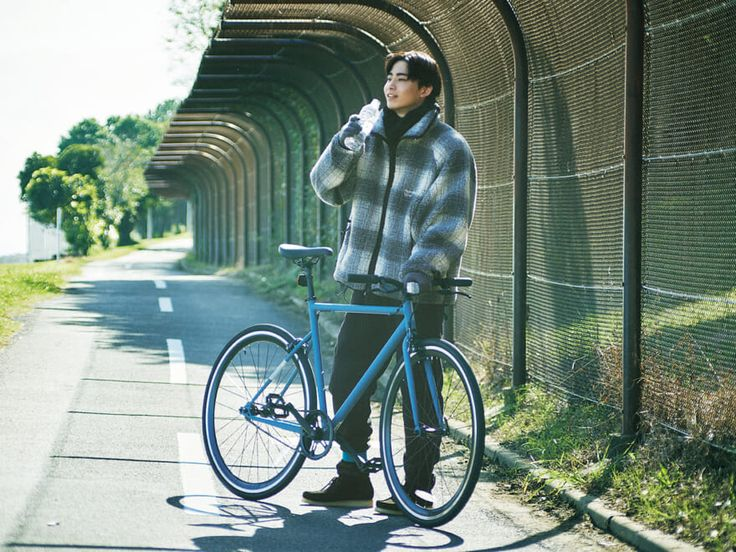
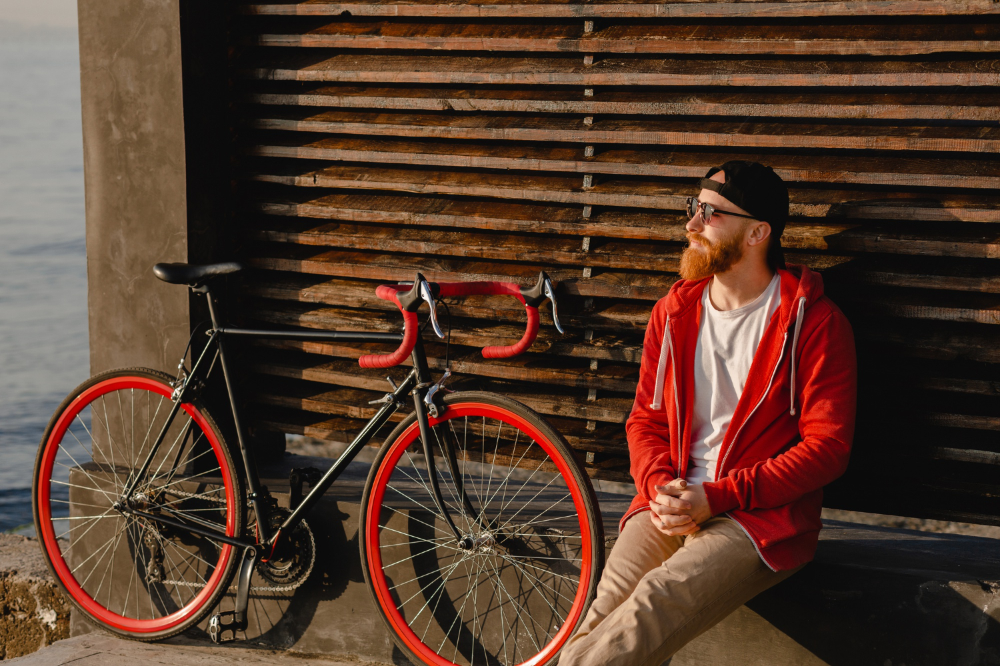

気分で選ぶ。
スタイルで楽しむ。
安全は、きちんと備える。
Cycle Styleは、初心者や街乗りを楽しむ20代〜50代向けに
「サイクリング 服装」「自転車 コーディネート」「自転車 安全装備」
といった悩みを解決する情報をまとめたガイドサイトです。
気分やシーン別に選べるサイクリングコーディネートの提案から
ヘルメット・ライト・反射アイテムなどの安全装備の基礎知識までを分かりやすく解説。
「街乗りに合う服装が分からない」
「初心者でも安全に走れる装備を知りたい」
「動きやすさとおしゃれを両立させたい」
そんな疑問に応える、個人的なオススメ情報を掲載しています。

ライドスタイルコレクション

服装と装着品

DRYサイクルTシャツ 半袖「Shu-Thang Grafix」プリントTEE

ペダリングを極める！高機能ジョガーパンツ


キャップタイプのカジュアルヘルメット

ROCKBROS テールライト Q2S

ROCKBROS ライト 最大400lm
制作者紹介
接客・販売業を中心に多様な業界を経験。PC販売・修理、営業サポート、店舗責任者などを担当し、顧客対応力と実務遂行力を培う。
職業訓練にてHTML/CSS、デザインツール、ネットワーク基礎を習得。現在はWebデザイナーとして、ユーザー視点を重視した制作に取り組んでいる。
IT・Web関連スキル